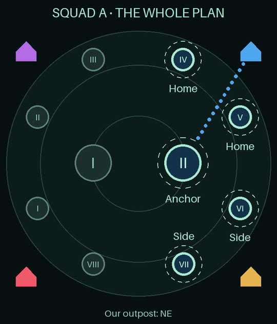
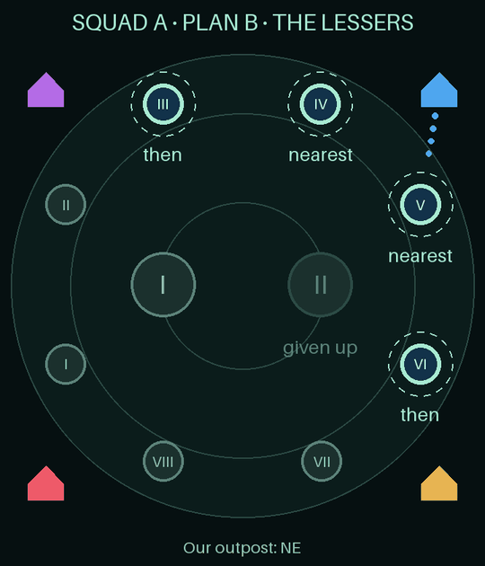

One post in Discord where members sign up. One board where the week's managers build the two squads. An R4 or R5 approves before anyone sees a spot. Then every placed member gets a card with their team, their role, Plan B for when we're ganged up, and three maps. This page lets you tap through all of it.

Tap a step. The order is real: nothing is shown to members until step 6, and step 7 ends the week on its own.
This is the only public message of the week. Tap its buttons: every answer comes back privately, and some arrive as a DM. Use the narrator buttons to move the week along.
I'm in asks two things: your power as the game shows it (52.7M, 1.2B, even "52,7M") and your Energy Core level. The battlefield needs Core 15, so below that you aren't signed up and the bot says so. You go to the back of the line, and the line decides who gets a spot.
Changed your mind? I'm out takes you off the list. Tap I'm in again and you join at the back.
My spot says "not yet" with your place in line until leaders publish, then shows your card. My record is your own attendance, nobody else's.
The power field is prefilled when the bot already knows you from a registered info card. Sign-ups close by themselves at the deadline on the post.
One card: your team's plan, your own role inside it, what to do if things change, Plan B for when we're ganged up, and three maps. The buttons under it explain the battle without leaving Discord. Pick any role to see its card.
Your team is one of three in each squad: Greater Anchor (10), Home Lessers (5) or Side Pressure (5). The field says where the team goes, its job, what it does at an Awakening, and when to stay or come back.
Your role is your slot inside that team, from the guide's Teams page: where you stand and how you play. The close-up map rings your spot; the second map shows your team's Vaults from our outpost.
If / when covers the calls that change the plan: a lost Vault, an Awakening, a recall.
Plan B is the Lessers plan, for when two guilds gang up on our Central: the squad's three commanders call it and everyone switches to the Lessers, closest to our outpost first. Every card carries it under If / when, with a third map showing the Lessers in the order we take them; commanders get the version that calls it. The Ganged up button explains the whole plan.
Commanders (⭐) get an extra field on signals. Subs get a shorter card with the whole squad's plan and Plan B; the bench gets a thank-you with their place in line.
Leaders work in their own forum. Open a sign-up from its pinned Desk post; the week gets its own post holding the board, tagged with its status. This is a working copy of the real controls with 64 made-up members: Auto-fill, Assign and the approval rule behave as the bot does.
Sort changes the pool's order: sign-up order, power or attendance. Auto-fill takes the first 60 in that order and places them by power: the strongest 20 mains split across the squads (balanced, or stacked into A), then teams 10 / 5 / 5, then roles in the guide's order. One ⭐ per team, its caller.
Assign places anyone by hand: squad, slot, team, role, commander. Hand placements (✎) survive every later Auto-fill. The limits hold: 20 mains, 10 subs, 3 commanders a squad.
Submit refuses while anyone is unplaced or a limit is broken, and says why. It pings R4 and R5 under the board. Approve & publish is open to any R4 or R5. If the approver drafted or submitted the week, the board says Self-approved. Try it as yourself, then as R4 Alpha.
After publish Auto-fill and the split are locked. Assign still works and DMs whoever it moves. A dropout leaves their role open instead of shuffling the team; a sub assigned in takes it.
The bot doesn't invent strategy. Every job, role and call on the cards comes from the guild guide's Teams page. Here is the shape of it, then Plan B for when we're ganged up.
A Central Vault pays +2 Battle Points a second, the most of any Vault, and is the hardest to hold: the strongest fleets go there. A Lesser pays +1 a second and falls to a smaller group, so two Lessers earn as much as a Central. Side Pressure makes the rival choose: ignore it and lose points, answer it and leave our Central.
Up to three a squad, from the mains: one per team, the one who calls it (Commander, Lesser Captain, Strike Lead). Auto-fill gives each team's ⭐ to its strongest member; managers move it to whoever leads best. In battle they drop Attack / Protect / Rally signals, call Awakening moves, time takedowns and recall the side group when our Central count falls.
Each guild starts at an outpost in one corner. Ours is blue on the map. Which Vaults are ours depends on the corner, so the managers set it when they open the week or later on the board, and My spot shows exact Vault numbers from then on.
| Corner | Central | Home | Side (rival) |
|---|---|---|---|
| NE | II | IV + V | VI, VII (SE) |
| SE | II | VI + VII | V, IV (NE) |
| NW | I | II + III | I, VIII (SW) |
| SW | I | I + VIII | II, III (NW) |
Strategies change mid-battle. We open with the three teams; if two guilds gang up on our Central, the squad's three commanders call Plan B and everyone switches to the Lessers. Roles are assigned ahead of time, so every card carries both plans.
On the card: a Plan B field after If / when (commanders get the version that calls it), a third map, and the Ganged up button. The same plan is on the guide site's Teams page.

| Action | Member | This week's managers | Another R4 / R5 | Admin |
|---|---|---|---|---|
| I'm in, I'm out, My spot, My record | yes | yes | yes | yes |
| Open a sign-up | no | any leader | yes | yes |
| Read the board | no | yes | yes | yes |
| Sort, Auto-fill, Assign, Close, Submit, corner | no | yes | refused | refused |
| Managers, Wrap up | no | yes | refused | yes |
| Approve & publish | no | yes, marked Self-approved | yes | yes |
| In game: Deployment Setup | no | an R4 or R5 enters squads, times and commanders by hand before the game's deadline | ||